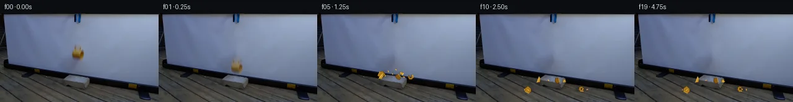

![首帧]()

Round 00
2026-11-05T05:30:12.541844+00:00像素候选变化代码 +255/−0inspection 更新
pixels d194419b89ba6db0 · code 080dfa40bc3ba2f6
查看本轮 generate.py 真实 diff
--- previous/generate.py
+++ current/generate.py
@@ -0,0 +1,255 @@
+from pathlib import Path
+import math
+
+import cv2
+import numpy as np
+from PIL import Image, ImageDraw, ImageFilter
+
+from artifact_io import save
+
+
+ROOT = Path(__file__).resolve().parent
+W, H = 256, 144
+SS = 4
+
+
+def make_clean_background(first):
+ """Remove only the falling mug, retaining every other source pixel."""
+ mask = np.zeros((H, W), np.uint8)
+ # The soft edge includes the real downward motion blur visible in frame 00.
+ cv2.ellipse(mask, (125, 63), (15, 20), 0, 0, 360, 255, -1)
+ mask = cv2.GaussianBlur(mask, (5, 5), 0)
+ clean = cv2.inpaint(first, (mask > 20).astype(np.uint8) * 255, 7, cv2.INPAINT_TELEA)
+ return clean, mask
+
+
+def extract_mug(first, clean):
+ """Recover a soft RGBA cutout from the source/background difference."""
+ x0, y0, x1, y1 = 108, 42, 143, 83
+ rgb = first[y0:y1, x0:x1].copy()
+ ref = clean[y0:y1, x0:x1]
+ delta = np.linalg.norm(rgb.astype(np.float32) - ref.astype(np.float32), axis=2)
+ yy, xx = np.mgrid[y0:y1, x0:x1]
+ support = np.clip(1.0 - (((xx - 125.0) / 16.0) ** 2 + ((yy - 63.0) / 22.0) ** 2), 0, 1)
+ alpha = np.clip((delta - 4.0) / 34.0, 0, 1) * np.sqrt(support)
+ alpha = cv2.GaussianBlur(alpha.astype(np.float32), (3, 3), 0)
+ rgba = np.dstack([rgb, np.uint8(np.clip(alpha * 255, 0, 255))])
+ return Image.fromarray(rgba, "RGBA")
+
+
+def paste_mug(canvas, mug, center, angle=0, opacity=1.0):
+ sprite = mug.rotate(angle, resample=Image.Resampling.BICUBIC, expand=True)
+ if opacity != 1.0:
+ a = np.asarray(sprite.getchannel("A"), dtype=np.float32)
+ sprite.putalpha(Image.fromarray(np.uint8(np.clip(a * opacity, 0, 255))))
+ xy = (round(center[0] - sprite.width / 2), round(center[1] - sprite.height / 2))
+ canvas.alpha_composite(sprite, xy)
+
+
+def poly_points(cx, cy, points, angle, scale=1.0):
+ a = math.radians(angle)
+ ca, sa = math.cos(a), math.sin(a)
+ out = []
+ for x, y in points:
+ x, y = x * scale, y * scale
+ out.append(((cx + x * ca - y * sa) * SS, (cy + x * sa + y * ca) * SS))
+ return out
+
+
+def ceramic_polygon(draw, cx, cy, points, angle, scale=1.0, tone="gold"):
+ palettes = {
+ "gold": ((171, 121, 25, 255), (224, 175, 62, 255), (102, 65, 12, 255)),
+ "light": ((201, 151, 43, 255), (238, 199, 91, 255), (121, 82, 21, 255)),
+ "dark": ((134, 88, 15, 255), (190, 137, 35, 255), (75, 48, 14, 255)),
+ }
+ fill, hi, edge = palettes[tone]
+ p = poly_points(cx, cy, points, angle, scale)
+ draw.polygon(p, fill=fill)
+ draw.line(p + [p[0]], fill=edge, width=max(1, round(0.65 * SS)))
+ if len(points) >= 3:
+ draw.line([p[0], p[1]], fill=hi, width=max(1, round(0.75 * SS)))
+
+
+def ceramic_handle(draw, cx, cy, angle, scale=1.0):
+ # A thick broken C-shaped piece, drawn as nested rotated polygons.
+ outer = [(-4, -4), (2, -5), (5, -2), (5, 3), (1, 5), (-3, 4), (-1, 2), (2, 2), (2, -1), (0, -2), (-3, -1)]
+ ceramic_polygon(draw, cx, cy, outer, angle, scale, "gold")
+ inner = poly_points(cx, cy, [(0, -1.4), (2, -1.0), (2, 1.5), (0, 1.7)], angle, scale)
+ draw.polygon(inner, fill=(76, 61, 43, 255))
+
+
+def interpolate_keyframes(keys, t):
+ ordered = sorted(keys)
+ if t <= ordered[0]:
+ return keys[ordered[0]]
+ if t >= ordered[-1]:
+ return keys[ordered[-1]]
+ for a, b in zip(ordered, ordered[1:]):
… diff truncated; 168 more lines …